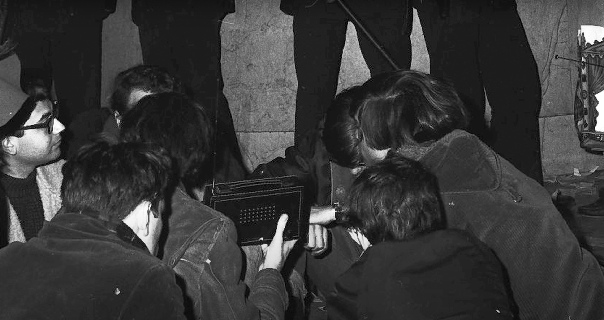
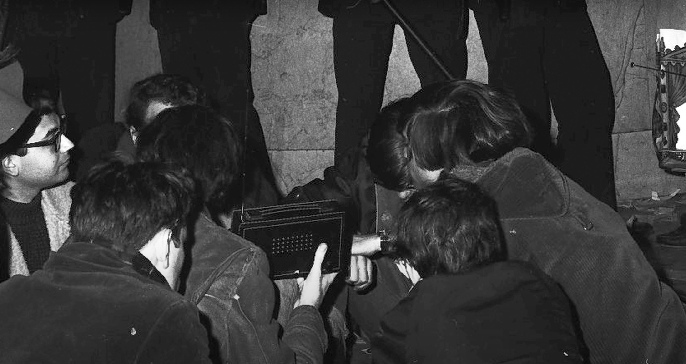

Imagine a world which was static, as to mean for now, not moving, still. Its feet firmly on the ground nothing went by unnoticed. The big concrete buildings stood tall and immovable, cumbersome great things that perfectly represented the bureaucratic systems or companies that they were built in the name of.
It was possible to move in this static city but life was like going through a thick treacle. The people could communicate with one another but only as fast as the fastest form of transport. If you were to say write a letter pay someone with a faster form of transport or more time on their hands to send it on your behalf.
Perhaps this sounds dystopic, but it wasn’t bad they functioned on a different rhythm, there was different value assigned to things that we might find mundane and vice versa. When meeting with friends is your only way of having a fast-paced exchange with someone, it becomes quite a treasured moment.
Gathering with a group or eyeballing as they called it was we can imagine quite exhilarating. Of course, to them, it was just how you did things, how you made new connections how you organised gatherings, events. It was the stuff of everyday life. People still managed to organise large scale human endeavours, but over a certain scale it was usually only possible for individuals with a large financial resources to do so.
There was a feeling though amongst these people that they were still faster than the cumbersome things around them. If they could get in a room together things moved very fast indeed and that this was the thing to remember, they were more nimble than these heavy things. That there may be bigger things at play, but they would always be one step ahead as long as they remembered this.
Way before anyone living in the above description could remember or whose grandparents could remember, in the Italian city of Livorno on the west coast of Tuscany, the sound of a bell reverberated through the solid stone streets, bouncing down alleyways, bits absorbed by the people walking, others dancing up into the sky and off into space, some morsels of which reached an open window at the edge of town and the ear of a young boy sat and a writing desk. He had been working for a long time now on the fastest communication imaginable.

Many a young person of course had dreamt such a dream before. It usually took the form of a faster mode of transport, a new car, a flying vehicle perhaps? But this idea, one that he was about to test out on his mother, was to make the bell itself his postman.
So with his mother as a witness and a contraption made from a piece of bent metal sheet and wires sat on his desk at one end of the room and a small bell attached to a wooden plate at the other, they waited with bated breath as he flipped a switch by the window. Immediately, as if his hand had reached through some kind of portal to touch the bell itself it began to move, freeing its sound which travelled back across the room to their ears and mouths, wide open.
What the boy had done was taken the same idea of this wave of sound of the bell travelling through the air every day to reach his house but had changed the frequency so that it could travel much further, a frequency that you can no longer hear, a kind of silent bell that told the other bell to ring.

It soon became apparent, in theory anyway that he could make this silent bell say whatever they wanted. In fact, they could store their own sound waves within the silent wave, like ripples on the surface of a rolling ocean. This changed everything he thought. "Buildings would no longer be static, they would become ships on a sea of sound. I could navigate the world from this desk."
In fact, he wasn't far off, it was on ships themselves that his device first started having an international influence. Just like the bell of the church tower the higher it was the further the sound could travel uninterrupted and so the masts of ships were useful places. Some saw the immense world altering power of such a technology and began to form ideas of a world interconnected, spaces, no longer what they appeared but sonically transported from one place to another. But like any technology it is neither inherently good nor evil, it is merely an interface with the world and ourselves. Many in power saw this as an interface of war the money of which developed the technology until it had far-reaching abilities.
Their waves could be bounced off the stratosphere of the earth and down again to reach far off places of war. Communicating with the stranded public. Like messages in a bottle free for anyone to open and read.
That particular war ended and what was left behind was an infrastructure, the possibility of a no-longer static world, a world with infinite connection through sound. An intimate discussion with an infinite number of people. But with war also comes paranoia and this free bell – that once tolled just like the one in the city of Livorno could not be interrupted could not be stopped in mid-air from reaching the people's ears. So instead those in power decided to try and control who could ring the bell. Regulations, thick with talk of spies and espionage were issued.
The paranoia was not unfounded, they knew the potential it contained for persuasion and for organising groups of people, communities in motion. The war had shown its power as a propaganda machine and now it was in the hands of the many. They could see their power of being the only ones holding the ropes slipping away from them. They would play only what they deemed ok for society for a society which up until then they had made in their image. But it was too late they were quicker, more nimble and had already begun creating their own bells, had found abandoned ones from the war and tall structures to ring them from, usually even louder than the people in power.

And now in the story we arrive pretty close to our current time and place, the 1980s in London and not too far from the scene i painted at the very beginning of this story of the static world. The story is so good here and is kind of the reason I got into radio, that it doesn't need much fictionalising. The idea that you can communicate wirelessly is common place. The silent bell you may have guessed they named first the wireless and then radio. The ripples on the wave predominantly consisted of music and talk shows played by nationally owned radio stations. This all came at a time when many communities were being housed in very tall tower blocks, immigrant communities whose music could not be heard on the national radio in fact it was hard to come by anywhere in the city. So they transformed their tall city buildings into bell towers, allowing them to play their music all over the city. The created ingenious devices as to evade the authorities, who were now panicking and trying to take them down off the air waves. They would use an infra-red laser so that the place of Djing could be different to the place of transmitting. The static buildings were now moving faster than anything. The music ringing out into peoples cars, into their homes into parties and raves, organising protests, organising communities. This transition from static to signal created so many new connections it was really the birth of whole musical genres. In the 70s when rock and roll wasn’t played on the radio it was played by the pirates, when punk wasn’t allowed it was played by the pirates, grime music in particular really wouldn’t exist without these pirate spaces for gathering sharing music and rapping over the top of it.
The underground as it is usually called was not underground at all it was in the air and seemed unstoppable. But of course they found a way. The mainstream expanded to include these genres but also tempted in these pirate radio stations to a legal life on the air, weighing them down with bureaucracy and running costs. Then came along portable media, the walkman then the iPod and iPhone played to our individualistic desires. Who needed a DJ when everyone could be their own DJ?
The dream of radio, of an interconnected world of self organising communities, of the parties, of the riots became dormant once again. But its DNA was well and truly established in the public physique or imaginary to use some academic discourse. An imaginary which resulted in the formation of the internet thousands of radios all communicating with each other through computers. And it held so much hope, file sharing, chat rooms etc. but it wasn’t long before this went the same way as radio. Expensive running costs, advertisements to pay for it and the slowing down of independent sharing and organising.
Radio however not the waves through the air type but the spirit of radio. The desire to share with a community uninhabited, remained. And quietly but confidently it began to make a home for itself there. And while many were distracted by the gloss of the visual and the big platforms and the money to be made, others began to use this network to share sound again. To talk, play music, listen and slowly but surely organise uninhibited.
EAnd now we find ourselves well and truly in the present day. Sat in this room, or maybe listening over the internet from somewhere else. In a school with their own internet radio station. A listening community, radio back again. Perhaps we have outgrown this individualism and want community sound? Maybe we are ready to listen?
ND
If there are enough radio stations and we can keep them independent, how might this help to give agency to existing communities or create new ones? What new conversations or genres of music might arise? In the 1980s in New York a DJ called Bob Fast who basically invented the idea of late night radio began organising Drop-ins, parties at JFK airport protests at grand central station through his radio station community.
Student radio stations in America helped the civil rights movement and inform listeners about LGBTQ matters across the United States. It was their connection to the student community and beyond to current affairs of which they were at the forefront. There are countless examples all over the world.


In 2018 along with Benjamin Earl and Esther Vane started Mushroom Radio at the KABK with only a hint of all this history in my mind as a way of giving the students a media of their own in the school, which already had instagram and now I know has tick tock as well, radio was something they were yet to take control of, this could belong to us.
Since then I have created a mobile radio station on a bike in Milton Keynes for a festival about the city and run together with Kirsten Spruit and Benjamin earl Good Times Bad Times in Rotterdam, which Kirsten may touch on in her chat later.
 

I am currently working on a project about internet radio cultures and am building an internet radio receiver so we can gain some agency away from our laptops and phones when listening to internet radio.